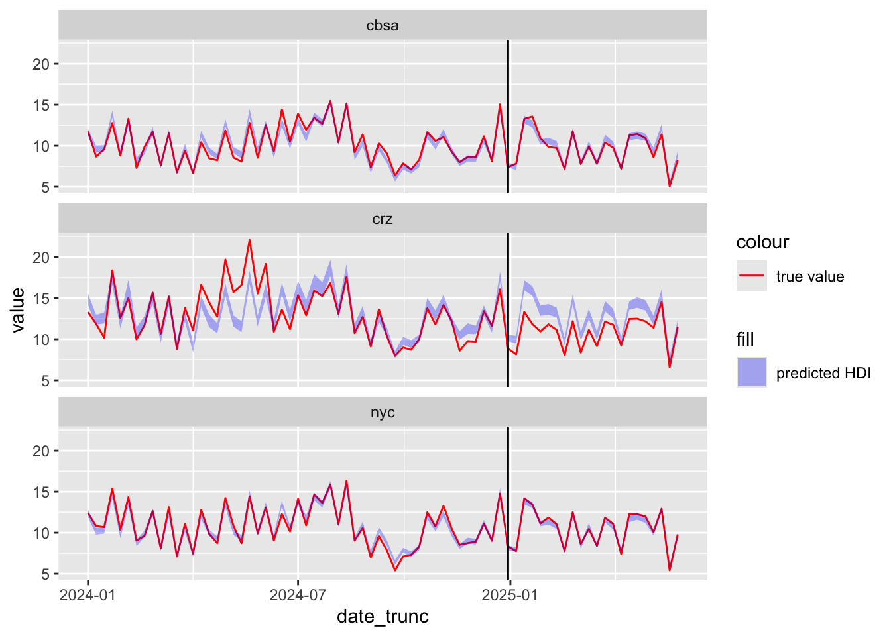
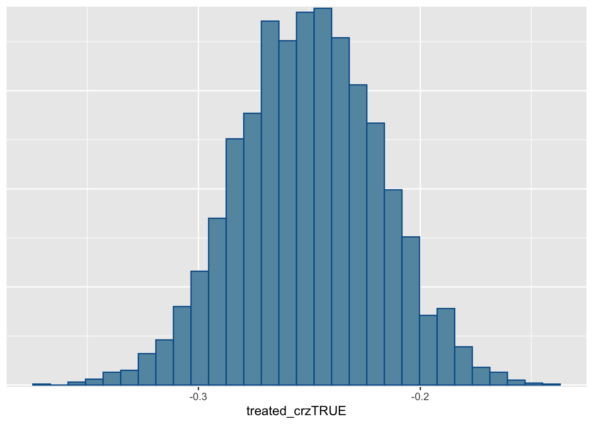
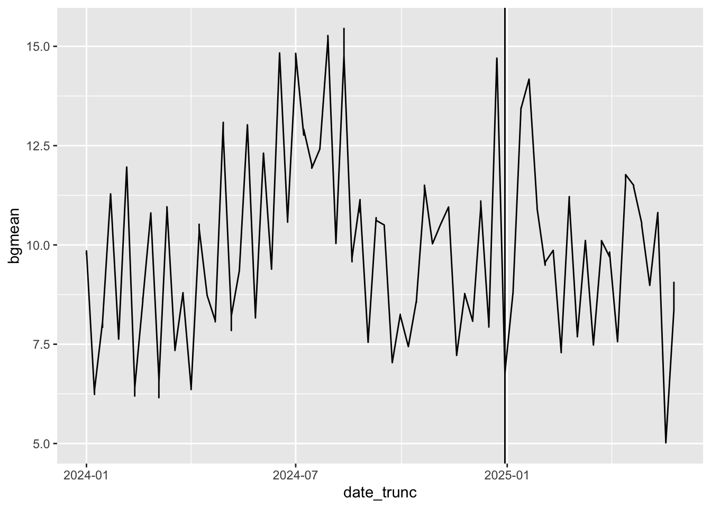
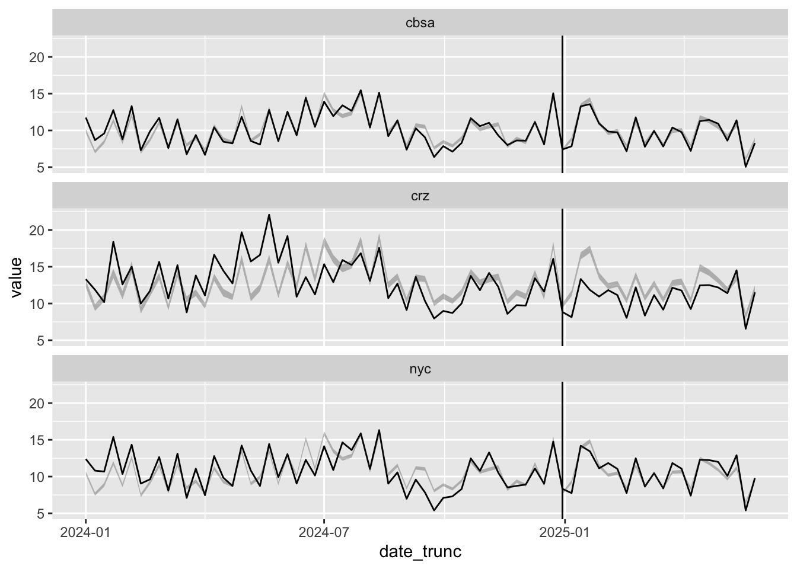
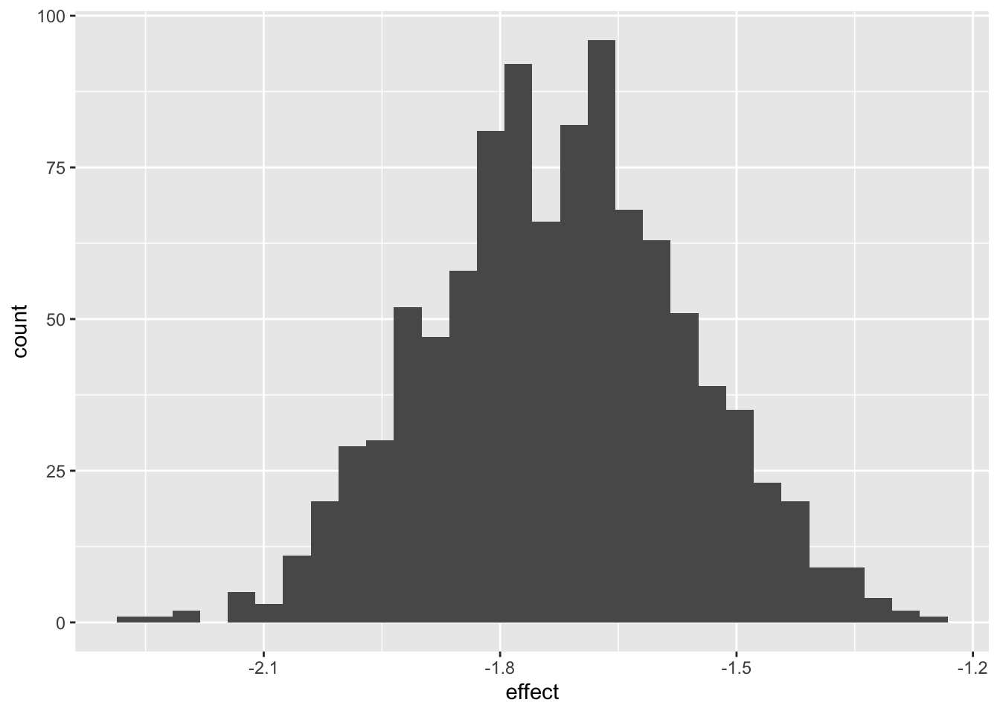

library(dplyr)
library(tidyr)
library(readr)
library(ggplot2)
library(lubridate)
library(rstanarm)
library("bayesplot")
options(mc.cores = parallel::detectCores())This post dives into the data of a recent paper quantifying the effects of Manhattan’s recent congestion pricing scheme (Fraser et al. (2025)). The authors argue that congestion pricing decreased the average daily maximum PM 2.5 concentration by 3 μg/m^3. Obviously, this isn’t the kind of treatment effect one can show experimentally; they first had to estimate what particulate concentration would have been if congestion pricing hadn’t been put into place, and then take the difference between what was observed and what they predicted. I’ll be adapting their methodology to use a Bayesian workflow.
The data below comes from air quality sensors throughout the NYC metropolitan area. For each day from January 1 2024 through June 1 2025, we observe the maximum PM 2.5 concentration at that sensor, along with environmental factors near that sensor that might influence the reading (e.g. distance from a highway, temperature, precipitation, population density, median income, etc). Sensors come from three different “areas”: the congestion reduction zone (abbreviated CRZ) where, starting in January 2025, congestion pricing was implemented, the five boroughs of New York (abbreviated NYC), and the rest of the greater metropolitan area (abbreviated CBSA).
data = read_rds("panel_daily_nyc.rds") |>
select(week, within, area, date, bgmean, value, treated, temp, precip,
pop_density, median_income) |>
mutate(
date_trunc=floor_date(date, unit = "weeks", week_start = 1),
treated_crz = treated & within) |>
drop_na()Below, we’ll plot bands of 25% to 75% quantiles of weekly PM 2.5 concentration over time. The vertical bar indicates the start of the treatment period.
quants <- \(spec, prefix) list(setNames(
quantile(c_across({{spec}}), c(0.25, 0.5, 0.75)),
paste(prefix, c("lo", "median", "hi"), sep="_")))
tdate <- min(filter(data, treated)$date_trunc)
data |> group_by(area, date_trunc) |>
summarize(q=quants(value, "val"), .groups = "drop") |> unnest_wider(q) |>
ggplot(aes(x=date_trunc, ymin=val_lo, ymax=val_hi, fill=area)) +
geom_ribbon(alpha=0.3) + geom_vline(xintercept = tdate)
Looking over the graph gives us some important intuitions:
- It seems like emissions in all three areas tended to following the same trajectories over time. This suggests basing our prediction for counterfactual particle counts in the CRZ on particle counts in the CBSA and NYC regions.
- CRZ emissions before congestion pricing tended to be higher than the other areas. After congestion pricing, that no longer seems to be the case.
- At the same time, there seems to be a downward trend overall throughout the two years starting well before congestion pricing began.
A Simple Difference in Differences Model
With these intuitions in mind, we’ll start with the following simple model using the following assumptions:
- There’s an overall time-trend affecting all three regions.
- The effect of congestion pricing is homogeneous in time and affects only the CRZ.
fit1 <- stan_glm(sqrt(value) ~ factor(date_trunc) + treated_crz + area, data=data)Let’s compare this model’s predictions of what sensor readings without congestion pricing would have been like to what we observed in practice.
preds <- t(posterior_predict(fit1, mutate(data, treated_crz=FALSE))[sample.int(4000, 200),])^2
colnames(preds) <- paste("pred", 1:200, sep="")
bind_cols(data, as_tibble(preds)) |>
group_by(area, date_trunc) |>
summarize(across(value | starts_with("pred"), mean)) |>
rowwise() |> mutate(q=quants(starts_with("pred"), "pred")) |> unnest_wider(q) |>
ggplot(aes(date_trunc, value, ymin=pred_lo, ymax=pred_hi)) +
geom_line(aes(color="true value")) + geom_ribbon(alpha=0.3, aes(fill="predicted HDI")) +
geom_vline(xintercept = tdate) + facet_wrap(~area, nrow=3) +
scale_fill_manual(values = c("predicted HDI" = "blue")) +
scale_color_manual(values = c("true value" = "red"))
The predicted sensor readings generally match the true values before the treatment period, but are higher than what we observed after the treatment period within the CRZ. This suggests that congestion pricing did cause lower emissions. We can also see this in the posterior distribution of the treatment coefficient, with support almost entirely below zero.
mcmc_hist(fit1, "treated_crzTRUE")
Effects Beyond the CRZ
So far, we’ve assumed that any treatment effect is localized to the CRZ area. But this may not be the case: perhaps emissions from vehicles driven in the CRZ carry over into other regions as well. If we can’t use areas outside the CRZ as controls, however, we’ll need to choose other sensor locations.
The original paper identified a handful of sensor locations known to be upwind of the CRZ. The average PM 2.5 levels of these sensor locations were identified as “background levels”. These levels are shown below.
data |> group_by(area, date_trunc) |>
summarize(bgmean=mean(bgmean)) |>
ggplot(aes(date_trunc, bgmean)) + geom_line() + geom_vline(xintercept = tdate)
In our next model, we’ll let all three regions have treatment effects deviating from the linear trend identified by this background PM 2.5 level. We’ll also control for environmental effects.
fit2 <- stan_glm(sqrt(value) ~ bgmean + treated:area + area +
log(temp) + precip + log(pop_density + 1 ) + log(median_income + 1),
data=data)mcmc_intervals(fit2)
From the posterior plot above, it doesn’t seem like areas outside the CRZ experienced treatment effects after all. Once again, we can plot the counterfactual particle levels from this model.
preds <- t(posterior_predict(fit2, mutate(data, treated=FALSE))[sample.int(4000, 1000),])^2
colnames(preds) <- paste("pred", 1:1000, sep="")
pred_data <- bind_cols(data, as_tibble(preds))
pred_data |>
group_by(area, date_trunc) |>
summarize(across(value | starts_with("pred"), mean)) |>
rowwise() |> mutate(q=quants(starts_with("pred"), "pred")) |> unnest_wider(q) |>
ggplot(aes(date_trunc, value, ymin=pred_lo, ymax=pred_hi)) +
geom_line() + geom_ribbon(alpha=0.3) + geom_vline(xintercept = tdate) + facet_wrap(~area, nrow=3)
Interestingly, it seems from the plot above like the treatment effect decreases with time: initial PM 2.5 levels dropped in 2025, but now they seem almost level with our counterfactual predictions. We’ll come back to this idea of time-varying treatment effects.
For now, let’s try to calculate the posterior on the treatment effect itself. Because we’re modeling the square root of the PM 2.5 concentration rather than the concentration itself, we can’t just look at posterior of the treated coefficient. Instead, we have to manually calculate the difference between actual observations and couterfactual predictions.
pred_data |>
filter(treated_crz) |>
mutate(across(starts_with("pred"), \(x) value - x)) |>
summarize(across(starts_with("pred"), mean)) |>
reframe(effect=c_across(starts_with("pred"))) |> select(effect) |>
ggplot(aes(effect)) + geom_histogram() 
References
Fraser, Timothy, Yeonkyeong Gina Park, Danni Lu, Mohammad Tayarani, Haiyan Deng, and H. Oliver Gao. 2025. “A First Look into Congestion Pricing in the United States: PM2.5 Impacts After Six Months of New York City Cordon Pricing.” Npj Clean Air 1 (1): 39. https://doi.org/10.1038/s44407-025-00037-2.